Observation et étude de l'ionosphère terrestre par le biais des ondes VLF
Ahmed AMMAR [1]
Hassen GHALILA [2]
[1] Laboratoire de Spectroscopie Atomique, Moléculaire et Applications, Faculté des Sciences de Tunis – Université de Tunis El Manar, Tunis, Tunisie. Email: ammarahmed.ph@gmail.com
[2] Laboratoire de Spectroscopie Atomique, Moléculaire et Applications, Faculté des Sciences de Tunis – Université de Tunis El Manar, Tunis, Tunisie.
18 Juillet 2016
Nos radiotélescopes
- SID MONITOR: Sudden Ionospheric Disturbance MONITOR.
- AWESOME: Atmospheric Weather Electromagnetic System of Observation, Modeling, and Education.
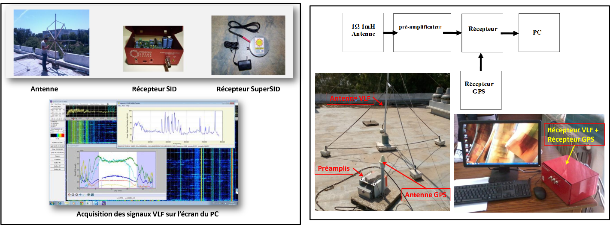
Bande de réception
Les ondes ELF (Extremely Low Frequencies) et VLF (Very Low Frequencies) constituent la partie du spectre électromagnétique réspectivement entre 30-3000 Hz et entre 3-30 kHz. Il jouent un rôle très important dans la communication et les systèmes de navigation internationale.
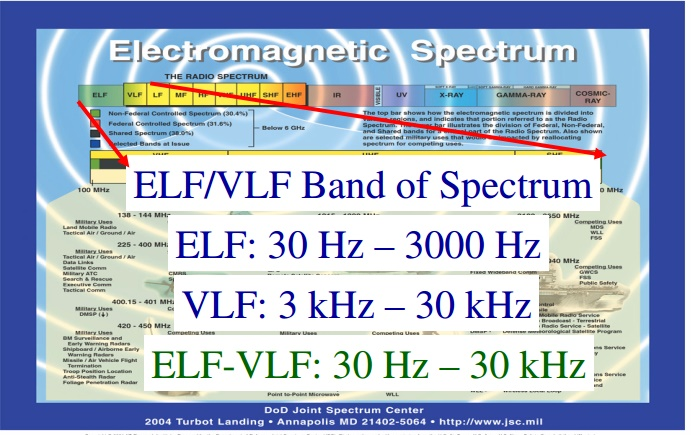
Ionosphère terrestre
L’ionosphère est une région de l’atmosphère qui s’étend à partir d’une altitude d’environ 60 jusqu’au plus que 1000
km dans laquelle il existe un nombre très variable d’électrons et d’ions libres. La présence de ces particules
chargées fait de cette région un bon conducteur électrique qui réfléchit les ondes électromagnétiques sur une large bande de fréquences.
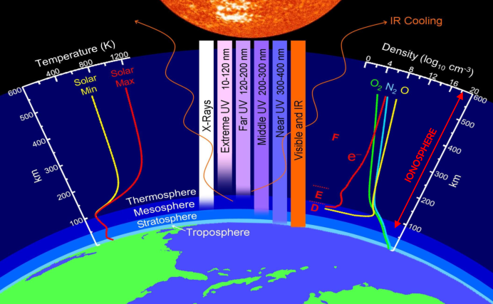
Pourquoi l'étude de l'ionosphère terrestre est important?
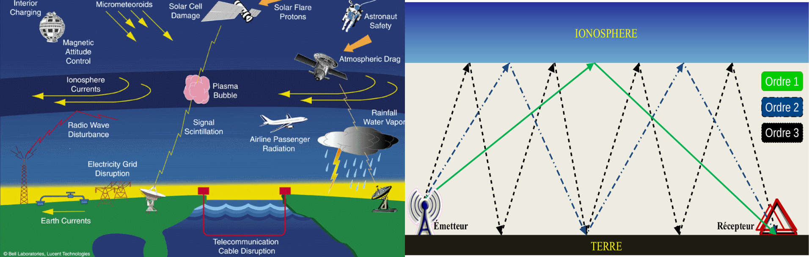
Localisation des émetteurs VLF étulisés dans notre recherche
Les ondes VLF, transportant des perturbations ionosphèriques, sont rayonnées
par différents émetteurs VLF actuellement en service en plusieurs points de la planète.
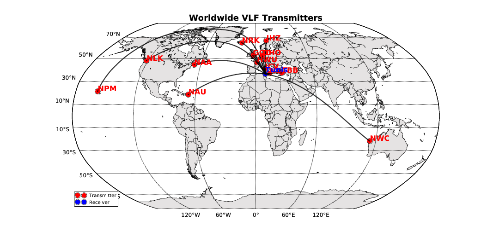
Alternance jour/nuit et alternance des saisons
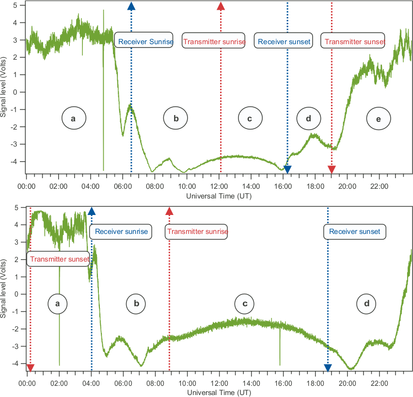
Éclipse solaire totale de 20 Mars 2015
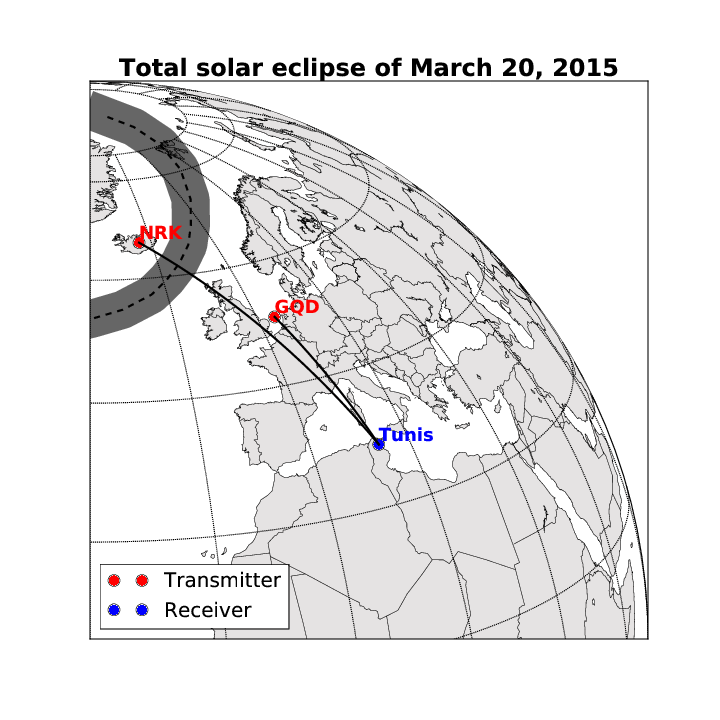
Observation de l'éclipse solaire totale de 20 Mars 2015
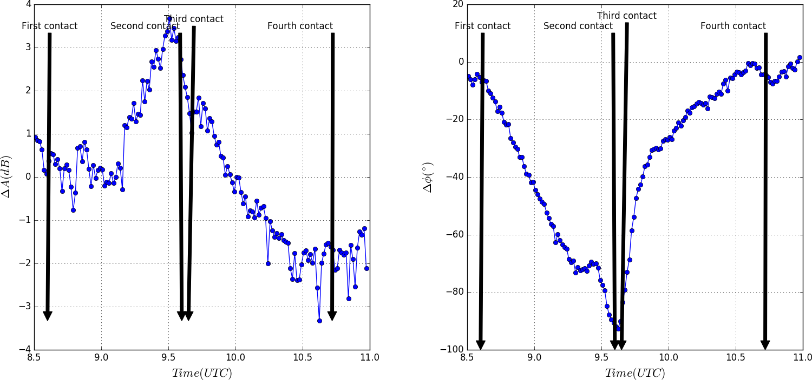
Les éclairs comme des émetteurs VLF naturels
Les éclairs peuvent être assimilés à des antennes qui rayonnent sur des très larges spectre, dont une grande partie est dans les Trés Basses Fréquences (TBF).
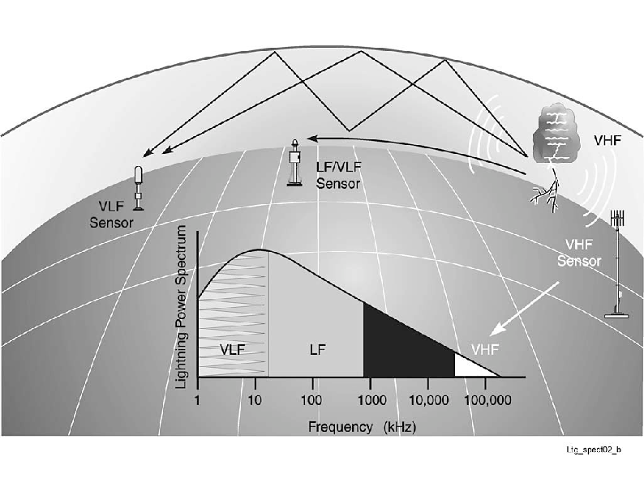
Observation des tweeks à Tunis
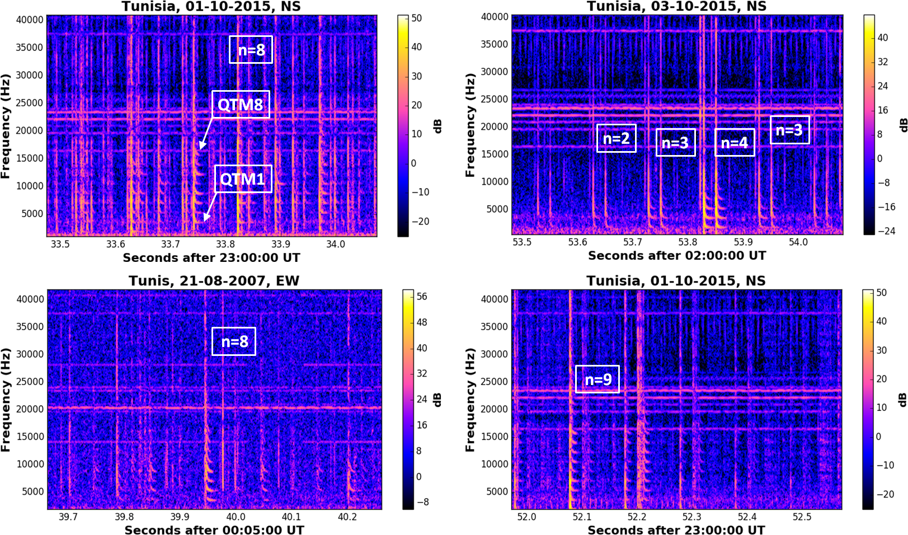
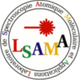